REDES · curso 2
3. Capa de Transporte · REDES
Escrito por Adrián Quiroga Linares.
3.1 Introducción
La capa de transporte es un componente clave en la arquitectura de redes, cuya función es asegurar que los datos enviados desde una aplicación en el origen lleguen de manera correcta al proceso de destino.
Recordatorio

La capa de transporte se encarga de preparar los datos para la transmisión, recibe los datos que le pasa la capa de aplicación y los prepara para su transmisión dependiendo de si se utiliza TCP o UDP. Debe decidir si fragmenta los datos en segmentos (TCP) o simplemente les añade una cabecera (UDP). Una vez los datos llegan al destino se debe encargar de reconstruir los mensaje que fueran segmentados y entregarlos al proceso correcto en el sistema receptor.
La capa de transporte no necesita conocer cómo funciona el canal de transmisión, ya que asume que puede haber muchos errores en la transmisión. El objetivo es realizar una comunicación lógica entre el origen y el destino, sin importar cómo se manejen los errores en las capas inferiores
La capa de transporte está presente solo en los dispositivos de origen y destino, no en los routers intermedios. Los routers se ocupan de las capas inferiores, como la red, pero no gestionan los detalles del transporte de datos.
TCP (Transmission Control Protocol): TCP divide los mensajes en segmentos más pequeños. A cada segmento le añade una cabecera de control para asegurar la correcta transmisión y el control de errores.
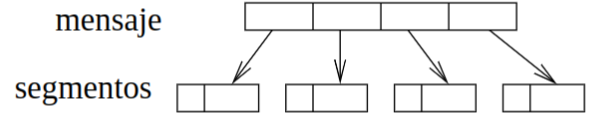
UDP (User Datagram Protocol): UDP no realiza segmentación de mensajes ni garantiza la entrega ordenada. Simplemente añade una cabecera a los datos y los envía. Es más rápido, pero menos fiable que TCP.
3.2 Multiplexión y demultiplexión
Los mensajes pasan de la capa de aplicación a la capa de transporte a través de un socket. Los procesos escriben y leen del socket. La capa de transporte recoge los mensajes del socket y los traslada al socket destino.
3.2.1 Multiplexión
La multiplexión es el proceso en el cual la capa de transporte recoge datos de múltiples procesos de aplicación, los organiza y los envía a la capa de red. Esto se hace recorriendo cada uno de los sockets asociados a las aplicaciones, procesando los datos de cada socket, y enviando los segmentos (paquetes) correspondientes a la red. Cada proceso de aplicación tiene su propio socket, lo cual permite que varios procesos diferentes transmitan datos simultáneamente. La multiplexión asegura que los datos de distintos procesos sean recogidos y enviados a través de la red de manera ordenada.
3.2.2 Demultiplexión
La demultiplexión ocurre en el lado del receptor. Aquí, la capa de transporte recibe segmentos de la capa de red, reconstruye los mensajes originales y los distribuye a los sockets correspondientes en función de los números de puerto que identifican a cada socket. De esta manera, los procesos en el lado del receptor pueden recoger los mensajes que les corresponden.
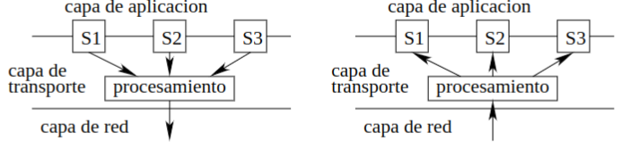
3.2.3 Identificación mediante puertos
Para identificar a qué socket corresponde un mensaje, se usan los números de puerto, que son enteros de 16 bits (0-65535). Estos números permiten diferenciar qué proceso debe recibir los datos en el sistema.
Los puertos entre 0-1023 están reservados para servicios bien conocidos (como HTTP o FTP), se conocen como Puertos Conocidos. Los puertos entre 1024-49152 están disponibles para las aplicaciones de usuario, se llaman Puertos Registrados.
Y los puertos restantes son los Puertos Efímeros que son los que se usan cuando por ejemplo abrimos varias pestañas de firefox simultáneamente, como no podemos usar el mismo puerto, el SO asigna a cada ventana un puerto efímero diferente, y al cerrarlas se liberan.
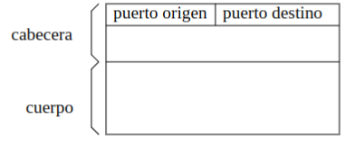
3.2.4 Multiplexión y Demultiplexión con sockets sin conexión (UDP)
En el caso de UDP (User Datagram Protocol), los sockets se identifican únicamente por la dirección IP de destino y el puerto de destino. Por ejemplo, un servidor que proporciona la hora del día a múltiples clientes (como el servicio daytime en el puerto 13) recibe datagramas de diferentes clientes y responde a cada uno de forma individual. Todos los datagramas se entregan al mismo puerto de destino, pero el puerto de origen permite que el servidor sepa a quién responder.
Si dos segmentos UDP tienen diferentes direcciones IP y/o números de puerto de origen, pero la misma dirección IP de destino y el mismo número puerto de destino, entonces los dos segmentos se enviarán al mismo proceso de destino a través del mismo socket de destino
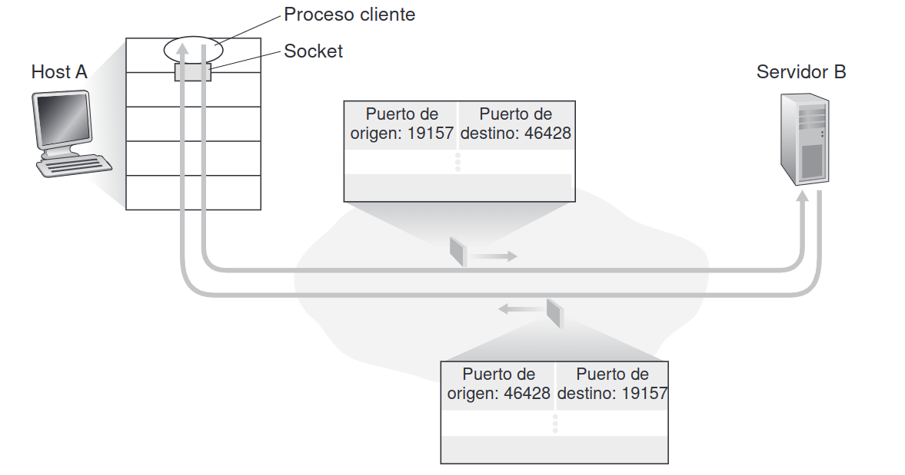
3.2.5 Multiplexión y Demultiplexión con sockets orientados a conexión (TCP)
En el caso de TCP (Transmission Control Protocol), los sockets se identifican con una tupla de 4 elementos: la dirección IP de origen, la dirección IP de destino, el puerto de origen y el puerto de destino. Por tanto, cuando un segmento TCP llega a un host procedente de la red, el host emplea los cuatro valores para dirigir (demultiplexar) el segmento al socket apropiado.
En particular, y al contrario de lo que ocurre con UDP, dos segmentos TCP entrantes con direcciones IP de origen o números de puerto de origen diferentes (con la excepción de un segmento TCP que transporte la solicitud original de establecimiento de conexión) serán dirigidos a dos sockets distintos. Cada conexión es atendida por un proceso o hilo.
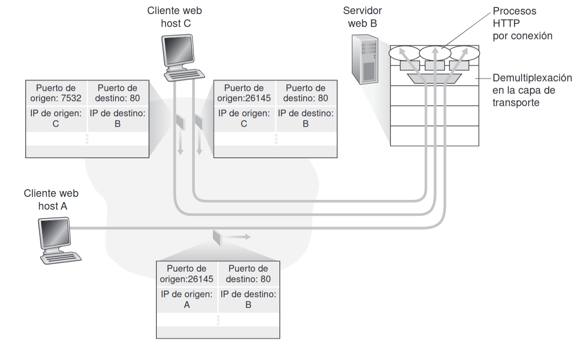
En TCP, hay dos tipos de sockets:
- Socket de servidor: Solo espera conexiones de clientes.
- Socket de conexión: Se encarga de manejar una conexión específica.
Cuando un cliente establece una conexión con un servidor, el socket de servidor transfiere la conexión a un socket de conexión dedicado a esa interacción. Así, múltiples conexiones pueden ser manejadas simultáneamente por un solo servidor, como ocurre en servicios como telnet o HTTP.
Estos mecanismos permiten que múltiples aplicaciones en diferentes dispositivos puedan comunicarse de manera eficiente y ordenada a través de la red, utilizando un solo enlace físico pero gestionando múltiples flujos de datos simultáneos.
3.3 Capa de Transporte Sin Conexión: UDP
UDP (User Datagram Protocol) es un protocolo de transporte de capa 4 en el modelo OSI. A diferencia de TCP, es un protocolo sin conexión, lo que significa que no establece una conexión entre el emisor y el receptor antes de enviar los datos, ni garantiza que los datos lleguen en orden o sin errores. Es simple y poco sofisticado.
En el emisor, UDP coge el mensaje que se va a enviar y le añade una cabecera simple para formar un segmento. La cabecera UDP solo tiene cuatro campos (puerto origen, puerto destino, longitud total y suma de comprobación). La longitud total incluye el tamaño del segmento entero, contado la cabecera y datos. La suma de comprobación es un mecanismo para detectar errores en los datos. (no se incluyen las IPs pero ya se verá mas adelante.)
La suma de comprobación se usa para detectar errores en el segmento (tanto en los datos como en la cabecera). En el origen, se suman todas las palabras de 16 bits del segmento. Luego se realiza un complemento a 1 del resultado y se inserta en el campo de suma de comprobación. Al llegar al destino, se recalcula la suma de comprobación y si coincide con la original, significa que el paquete llegó sin errores.
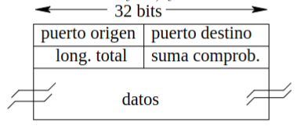
En el receptor, UDP verifica si el segmento llegó sin errores utilizando la suma de comprobación. Si no hay errores, los datos se pasan al socket para ser procesados por la aplicación.
Es un servicio sin conexión puesto que no hay una negociación previa entre emisor y receptor. Los segmentos simplemente se envían sin establecer una conexión. Esto reduce la latencia ya que se evita el famoso handshake de TCP que se explicará más adelante. Sin embargo, UDP no garantiza la entrega de segmentos ni los retransmite si se pierden o llegan con errores.
Tiene un procesamiento rápido y bajo consumo de recursos, debido a que no mantiene el estado de la conexión ni tiene mecanismos de control de errores sofisticados, UDP es muy eficiente. Esto lo hace ideal para servidores que necesitan atender a muchos clientes simultáneamente o para aplicaciones que priorizan la velocidad.
La cabecera de UDP es mucho más pequeña que la de TCP, lo que implica un procesamiento más rápido y menos sobrecarga de almacenamiento y transmisión. Las aplicaciones que usan UDP pueden implementar sus propios mecanismos de control si es necesario, como la numeración de datos o la detección de errores adicional.
Ejemplos de usos de UDP:
- Traducción de nombres (DNS)
- Protocolos de encaminamiento (RIP)
- Administración de red (SNMP)
- Servidor de archivos remoto (NFS)
3.4 Fundamentos de la transmisión fiable
La transmisión fiable se refiere a la capacidad de garantizar que los datos enviados a través de una red lleguen correctamente al receptor. Para lograrlo, se utilizan protocolos de retransmisión conocidos como ARQ (Automatic Repeat reQuest). Estos protocolos retransmiten paquetes si se detecta un error o si un paquete no llega al destino.
Las confirmaciones de recepción son los ACKs (ACKnowledgment number)
3.2.1 Protocolo ARQ: Parar y esperar
En este protocolo, el emisor envía un paquete y luego se detiene a esperar una confirmación (ACK) del receptor antes de enviar el siguiente paquete. Es un proceso simple pero ineficiente si hay mucha latencia o pérdida de paquetes.
Si no se producen errores, el receptor recibe el paquete correctamente y envía un ACK (confirmación) al emisor. El número del ACK es el número del siguiente paquete esperado. Una vez que el emisor recibe el ACK, envía el siguiente paquete.
Si se pierden paquetes, si un paquete se pierde en el camino o llega con errores, el receptor no enviará el ACK. El emisor tiene un temporizador que empieza a contar cuando se envía el paquete. Si no recibe el ACK antes de que el temporizador expire, retransmite el paquete.
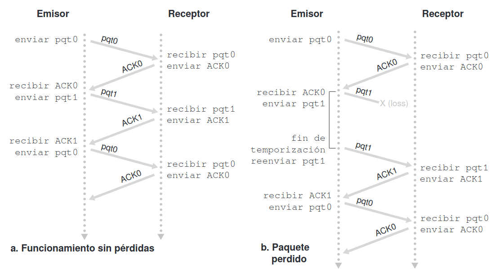
**Si se pierde el ACK**, el emisor no sabrá que el receptor recibió el paquete. Entonces, cuando el **temporizador** expire, retransmitirá el paquete. El receptor, al recibir un paquete duplicado (*porque ya lo procesó antes*), simplemente reconoce que es un **duplicado** , **lo descarta** y **envía el ACK correspondiente nuevamente**.Si el temporizador se configura con un tiempo muy corto o hay congestión en la red, tanto los paquetes como los ACK pueden retrasarse. El emisor puede recibir duplicados de ACKs o de paquetes debido a este retraso, pero los identifica por el número de secuencia y los ignora si ya fueron procesados.
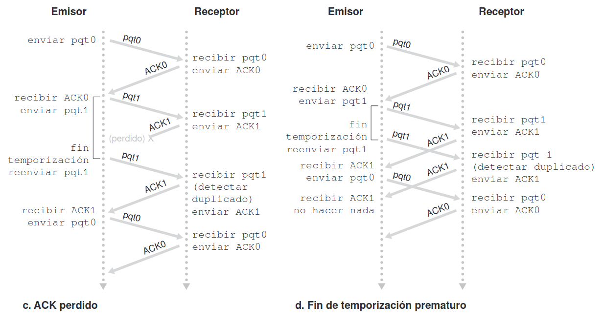
NAK
Un NAK (Negative-Acknowledge Character) implica que si se recibe, el protocolo retransmite el último paquete y espera a recibir un mensaje ACK o NAK del receptor en respuesta al paquete de datos retransmitido.
Si el emisor recibe un ACK o NAK alterados reenvía el paquete. Sin embargo este método introduce paquetes duplicados en el canal emisor-receptor. La principal dificultad con los paquetes duplicados es que el receptor no sabe si el último paquete ACK o NAK recibido correctamente en el emisor. Por tanto no puede saber si un paquete entrante contiene datos nuevos o se trata de una retransmisión. Para solucionar esto surgen los números de secuencia.
Cuando recibe un paquete fuera de secuencia, el receptor envía un paquete ACK para el paquete que ha recibido. Cuando recibe un paquete corrompido, el receptor envía una respuesta de reconocimiento negativo. Podemos conseguir el mismo efecto que con una respuesta NAK si, en lugar de enviar una NAK, enviamos una respuesta de reconocimiento positivo (ACK) para el último paquete recibido correctamente. Un emisor que recibe dos respuestas ACK para el mismo paquete (es decir, recibe respuestas ACK duplicadas) sabe que el receptor no ha recibido correctamente el paquete que sigue al que está siendo reconocido (respuesta ACK) dos veces.
Sin embargo si vence el temporizador, se van a enviar paquetes duplicados todo el tiempo. Por ello debemos hacer que en vez de dos, tres ACKs equivalen a un NAK.
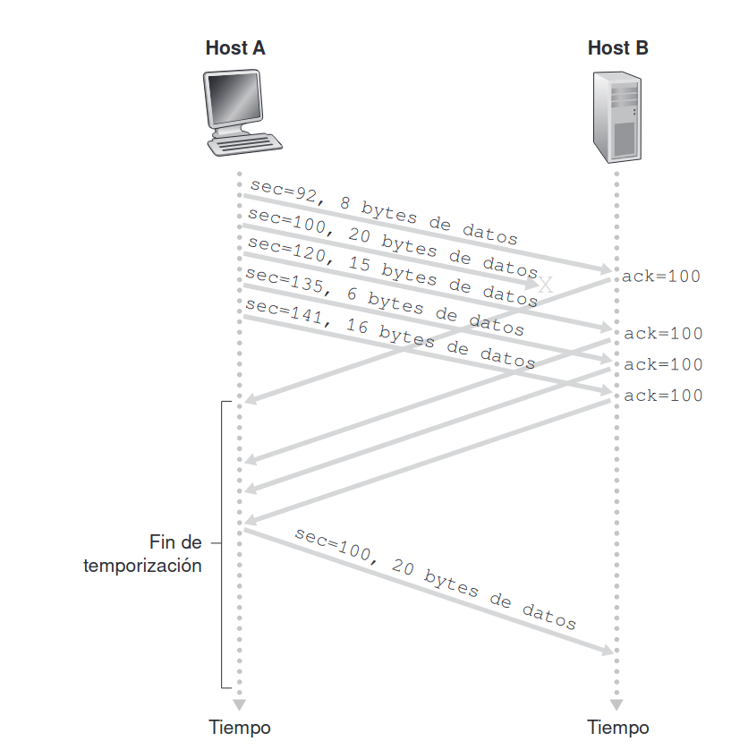
Inconveniente de parar y esperar
La poca utilización de enlace:
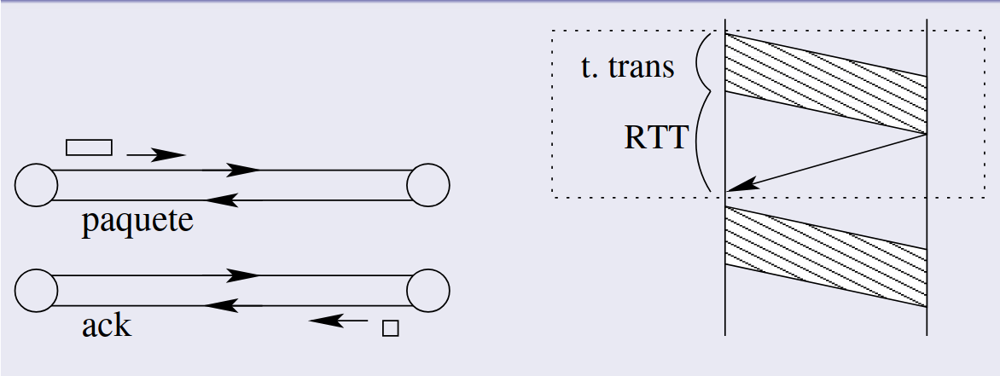
La utilización del enlace es la proporción del tiempo en que el emisor realmente está enviando datos, frente al tiempo total (que incluye tanto la transmisión como la espera). Es decir, es el tiempo útil dividido por el tiempo total. Se calcula de la siguiente forma:
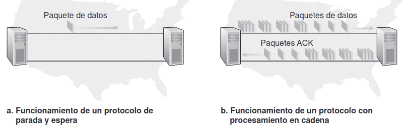
## 3.2.2 ARQ con ventana deslizante (entubamiento) El protocolo **ARQ con ventana deslizante**, también conocido como **entubamiento**, es una mejora sobre el protocolo "parar y esperar", y su principal ventaja es que **reduce el tiempo perdido** esperando confirmaciones (*ACKs*). En lugar de enviar un paquete y esperar una confirmación antes de enviar el siguiente, el emisor puede enviar **varios paquetes consecutivos** (*hasta un número máximo $N$ antes de recibir los ACKs*). Esto mejora considerablemente la **utilización del enlace**.La utilización del enlace se mejora al permitir que se transmitan múltiples paquetes antes de recibir un ACK.
La utilización es máxima cuando:
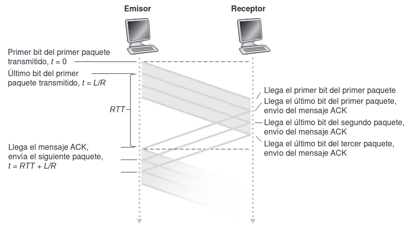
La ventana emisora es el conjunto de 1 hasta
La ventana receptora es el conjunto de hasta
El rango de números de secuencia debe abarcar al menos el del tamaño de la ventana emisora. Esto es necesario para que no haya confusión entre paquetes viejos y nuevos que puedan usar el mismo número de secuencia.
Tanto el emisor como el receptor deben poder almacenar varios paquetes en memoria. El emisor guarda los paquetes que ha enviado pero aún no han sido reconocidos, y el receptor guarda los paquetes que ha recibido pero aún no ha procesado.
El emisor envía varios paquetes de manera consecutiva sin esperar una confirmación por cada uno. La ventana del emisor se va desplazando conforme el emisor recibe los ACKs de los paquetes. Por ejemplo, si la ventana tiene un tamaño de
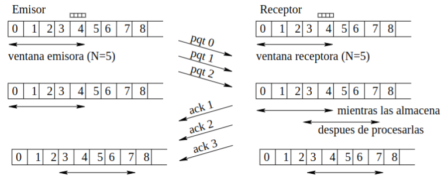
Retroceso N (Go-Back-N, GBN):
El receptor solo acepta paquetes en orden. Si un paquete se pierde o llega con errores, el receptor descarta todos los paquetes que lleguen después del paquete problemático. El emisor debe reenviar no solo el paquete que falló, sino también todos los paquetes siguientes. Los ACKs son acumulativos, lo que significa que un ACK para un paquete también confirma la recepción de todos los paquetes anteriores. No se pueden enviar paquetes desordenados.
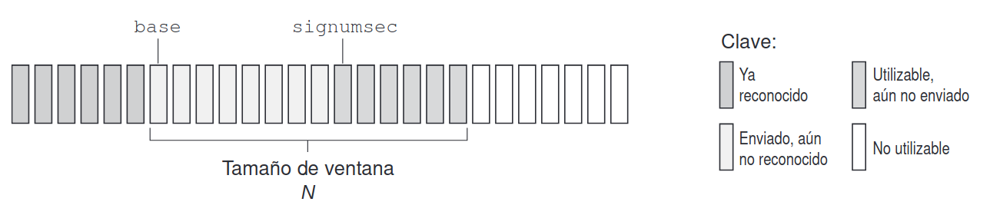
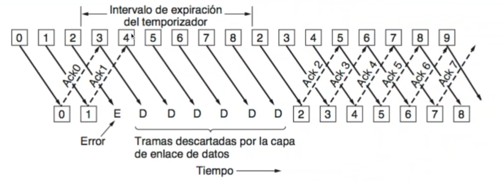
$N=4$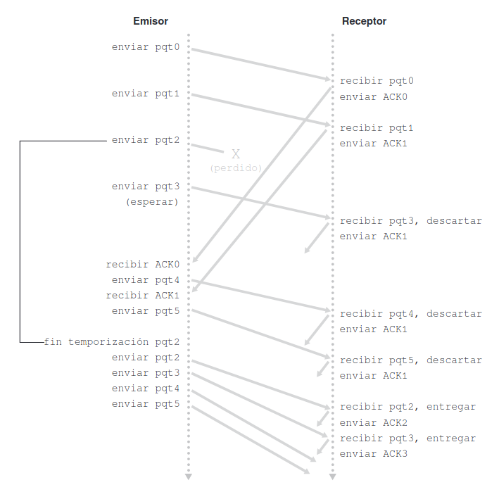
### **Repetición selectiva:** El receptor puede aceptar paquetes **fuera de orden**. Si un paquete **se pierde o llega con errores**, el receptor puede almacenar los paquetes posteriores y **solo solicitar la retransmisión del paquete perdido**. Solo se retransmiten los **paquetes que se pierden o llegan con errores**, lo que mejora la eficiencia en comparación con Go-Back-N. Se envía un ACK para cada paquete recibido correctamente, incluso si llegan fuera de orden.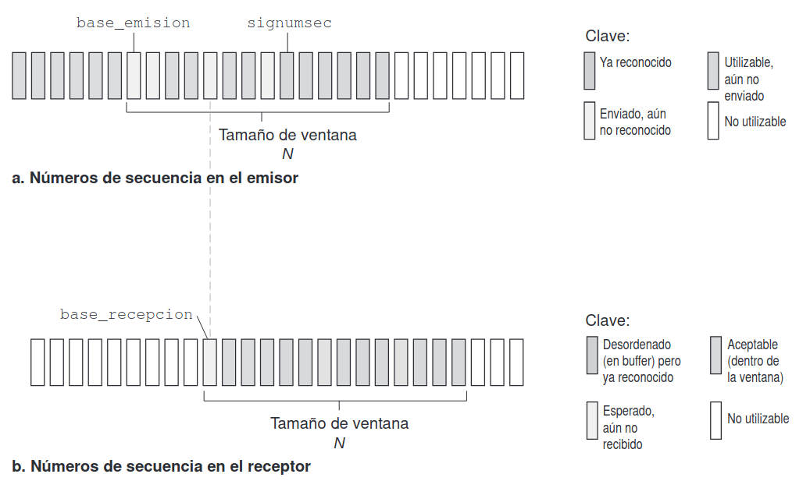
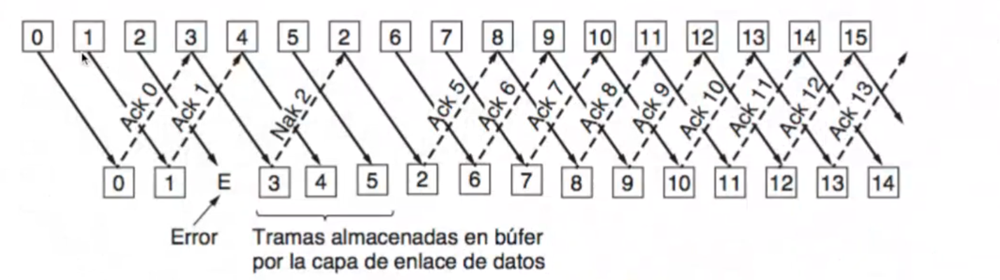
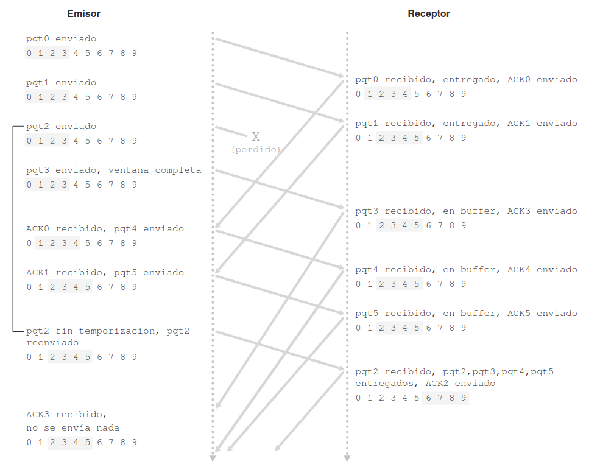
3.3 TCP
TCP (Transmission Control Protocol) es un protocolo que asegura una transmisión de datos fiable. TCP asigna números de secuencia a los segmentos de datos. Estos números de secuencia son de 32 bits y tienen algunas particularidades:
- Inicialización aleatoria: En lugar de comenzar en 0, TCP elige un número aleatorio (llamémoslo
) como punto de partida, lo que ayuda a diferenciar distintas conexiones y reducir posibles problemas de seguridad. - Incremento en función de los bytes enviados: Cada segmento tiene su propio número de secuencia, que es igual al número del último byte del segmento anterior más el número de bytes del segmento actual.
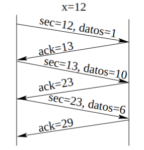
En muchas comunicaciones, los datos se transmiten en ambas direcciones. TCP optimiza el envío de datos y reconocimientos (ACK) utilizando una técnica llamada superposición o piggybacking. Esto significa que cuando un segmento de datos llega al receptor, este puede esperar un momento a enviar el ACK, combinándolo con los datos de respuesta para reducir el número de transmisiones.
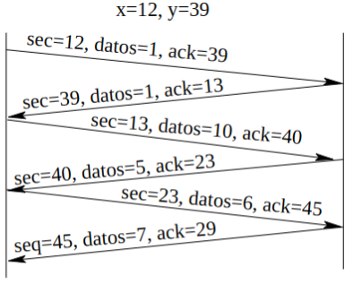
TCP utiliza ACK acumulativos, si el emisor envía varios segmentos, un solo ACK puede confirmar múltiples segmentos, lo cual es más eficiente. Si el emisor no recibe un ACK dentro del tiempo del temporizador, solo retransmitirá el segmento específico no reconocido, optimizando el uso de ancho de banda. Puede aceptar también segmentos en desorden y esperar a que lleguen después los intermedios.
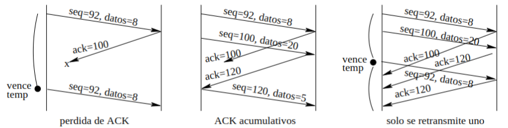
Cuando el temporizador expira, TCP retransmite el segmento y duplica el tiempo de espera del temporizador. Este ajuste progresivo del temporizador ayuda a mejorar el rendimiento en redes con retrasos fluctuantes.
Nota
Esto de aquí abajo ni caso, si lo pone se la saca.
EstimacionRTT es una media ponderada de los RTT recientes (el tiempo entre enviar un segmento y recibir el ACK)
DevRTT mide la variación de RTT, ayudando a TCP a ajustar los tiempos de espera.
3.3.1 Detección de Fallos en TCP
TCP no tiene reconocimientos negativos (NAK) específicos, pero se interpretan los ACK triplicados como un NAK lo que implica reenviar el paquete.
Cuando el receptor recibe un segmento con mayor número al esperado, es decir, cuando se forma un agujero, el receptor envía un ACK duplicado. El emisor lo interpreta sólo como un aviso.
Si esto vuelve a pasar, se envía otro ACK repetido. El emisor recibe entonces tres ACKs repetidos y en este caso realiza una retransmisión rápida, en la cual retransmite el segmento ausente antes de que venza el temporizador.
Hay dos eventos principales de pérdida:
- Vencimiento del temporizador: se considera grave, porque se han perdido tanto los segmentos como los reconocimientos.
- ACKs triplicados: Este caso se considera leve, puesto que han llegado los reconocimientos.
El control de flujo es el mecanismo que permite al receptor indicar al emisor el ritmo al que puede recibir datos. En el momento de la conexión, el receptor indica el tamaño de su ventana de recepción y el emisor fija a este valor su ventana de envío. Esto se hace mediante un campo en la cabecera TCP, lo que permite modificar también este valor en cada transmisión.
TCP establece la conexión a través de el three-way handshake para sincronizar los números de secuencia y asegurarse de que ambas partes estén listas para intercambiar datos. La secuencia es la siguiente:
- Emisor → Solicitud de conexión (SYN), número de secuencia
. - Receptor → Aceptación (SYN, ACK), número de secuencia
, reconoce . - Emisor → Confirmación (ACK), reconoce
.
Tras la confirmación, se pueden enviar datos en ambas direcciones.
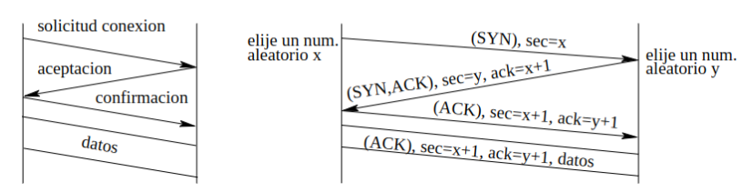
Desconexión: La desconexión es un proceso en dos pasos:
- Cuando una de las partes desea finalizar la conexión, envía una solicitud de desconexión (FIN). La otra parte envía un ACK para reconocerla y también envía un FIN.
- Ambas partes cierran el flujo en la dirección opuesta.
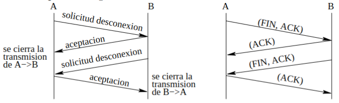
3.3.2 Estructura del segmento TCP
Cuando enviamos, el proceso va escribiendo sus datos al socket, y las especificaciones de TCP indican que debe coger los datos del socket para transmitir según convenga.
TCP segmenta los datos y el tamaño máximo del segmento (sin contar la cabecera) se denomina MSS (Maximun Segment Size).
Los segmentos además se pueden pushear por petición de la aplicación de usuario (enviar el paquete aunque no llene el MSS). También se pueden especificar datos urgentes y también se puede resetear la conexión.
Importante
Si por ejemplo dicen de calcular el número de bits que ocuparía el campo de número de secuencia. Hay que tener en cuenta el número de bytes máximo que pueden circular por la red durante el tiempo que vayan a estar vivos.
Por ejemplo si
Además el tamaño de la ventana receptora se calcula como :
La fórmula viene de la definición de ventana de recepción, donde es el tamaño máximo de paquetes que el receptor puede recibir y procesar pero que no confirmado. Se expresa en bytes.
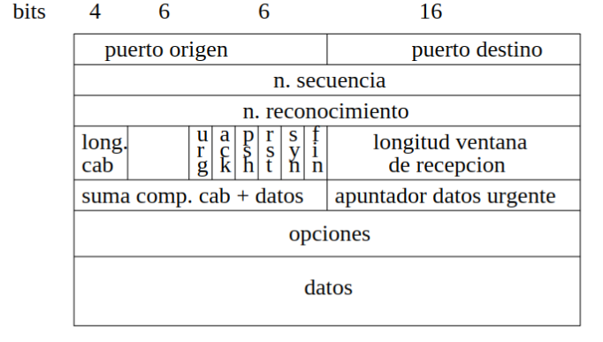
Tiene puerto origen y puerto destino. Número de secuencia inicializado en un número aleatorio. Número de reconocimiento, número de bytes recibidos correctamente siempre que el bit ACK está activado. En caso de no estarlo, este campo no se usa. Longitud de la cabecera
Indicadores
URG– El segmento tiene datos urgentes (urgent).ACK– El segmento tiene un reconocimiento (acknowledgment).PSH– El segmento fue empujado (push).RST– Se solicita reinicio de la conexión (reset).SYN– Se solicita inicio de conexión (synchronize).FIN– Se solicita fin de conexión (finished).
También contiene el tamaño de la ventana de recepción, el receptor le indica al emisor cuantos bytes puede recibir. Se usa para el control de flujo.
Suma de comprobación de 16 bits en complemento a uno (C1) de la cabecera TCP y cuerpo (y algunos campos más de la cabecera IP). Se calcula en los dos lados de la transferencia para verificar la transmisión.
Apuntador de datos urgentes, indica la posición de los datos urgentes dentro del segmento. En caso de que haya datos urgentes, URG está a 1. Y opciones, tiene varios usos, como negociar el tamaño máximo de los segmentos.
3.4 Congestion
3.4.1 Introducción
La congestión en redes TCP ocurre cuando demasiados paquetes intentan atravesar la red al mismo tiempo, causando retrasos y pérdida de datos debido a la saturación de las memorias de los routers. Esta saturación hace que los routers tengan que desechar paquetes, lo cual provoca más retransmisiones y empeora el problema. TCP implementa mecanismos para manejar esta congestión, regulando la tasa de envío en función de la congestión percibida en la red. Estos mecanismos son esenciales para mantener un flujo de datos eficiente y equilibrado. Veamos en detalle cada escenario de congestión y las técnicas de control que usa TCP:
3.4.2 Posibles Escenarios
Memoria Infinita en los Routers
Imaginemos que los routers pueden almacenar una cantidad infinita de datos. En este caso, conforme la tasa de envío de paquetes se acerca a la capacidad del enlace, los paquetes comienzan a acumularse en la cola del router, generando retrasos. Estos retrasos se van acumulando con cada nuevo paquete, creando un "cuello de botella".
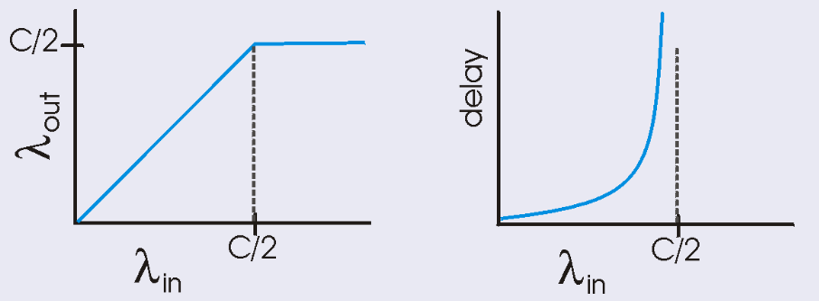
Memoria Finita en un Router
Cuando la cola se llena, el router empieza a descartar paquetes. Esto obliga al emisor a retransmitir los paquetes perdidos, lo que, a su vez, aumenta aún más la carga en la red y agrava la congestión.
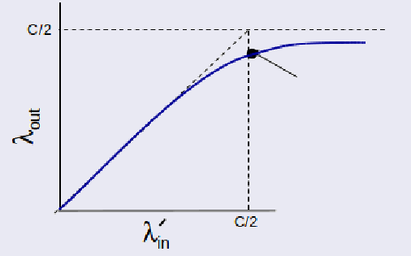
1Múltiples Routers
Cuando hay varios routers en el camino, si un paquete se pierde a mitad del camino, los routers anteriores han gastado recursos procesando un paquete que finalmente no llegó a su destino. Esto reduce la eficiencia general de la red, ya que se desperdicia capacidad en procesar paquetes que no alcanzarán su destino.
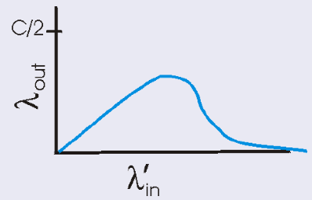
Tasa de transmisión entre 0 y C/2: todo se recibe OK y con retardo finito.
3.4.3 Control de Congestión en TCP
En TCP/IP, el mecanismo de control de congestión recae en TCP, que considera que hay congestión cuando expira un temporizador o se reciben ACKs triplicados. El emisor disminuye la tasa de emisión cuando nota que hay congestión. TCP define en el emisor dos variables que va actualizando el RTT y la ventana de congestion.
La ventana de congestión es una variable controlada por el emisor que limita la cantidad máxima de datos que pueden enviarse antes de recibir un reconocimiento (ACK) (Es lo mismo que la ventana receptora anteriormente mencionada). Se puede entender como limita a la ventana de emisión. Su tamaño se ajusta dinámicamente, aumentando gradualmente cuando no hay pérdidas y reduciéndose cuando detecta congestión. Se mide en bytes.
Explicación
Esto se puede entender como que es el número de bytes que se pueden transmitir durante un RTT, que incluye la ida y vuelta de los paquetes.
También es util esta fórmula:
Inicio Lento
Al iniciar una conexión, TCP configura una ventana de congestión inicial pequeña, equivalente al tamaño máximo del segmento (MSS). La ventana de congestión se incrementa exponencialmente, duplicándose en cada intervalo igual al RTT, hasta que se detecta una pérdida de paquetes o la ventana alcanza el tamaño del umbral de congestión. Por ejemplo, si el MSS es de 500 bytes y el RTT es de 0.2 segundos, la tasa de transmisión inicial sería (se mide en bits por segundo):
Cuando ocurre una pérdida o se alcanza el umbral, TCP abandona el inicio lento y pasa a la siguiente fase.
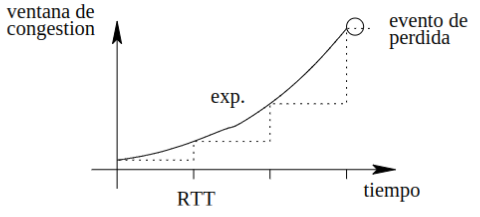
AIMD (Additive Increase, Multiplicative Decrease):
Se basa en dos principios:
Aumento aditivo cuando no hay congestión (es decir, no se detectan pérdidas de paquetes), la ventana de congestión aumenta de forma lineal (en unidades de 1 segmento por RTT).
Decremento multiplicativo cuando se detecta congestión (por ejemplo, a través de la pérdida de paquetes), la ventana de congestión se reduce a la mitad (una disminución multiplicativa).
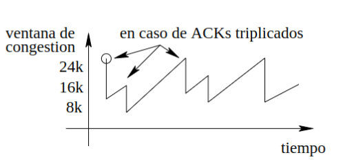
INFO
Umbral de Congestión (ssthresh):
- Definición: El umbral de congestión es el valor que marca el límite entre las fases de inicio lento y AIMD.
- Función: Indica el tamaño de la ventana en el que TCP pasa de inicio lento a AIMD. En inicio lento, la ventana crece exponencialmente hasta alcanzar este umbral, luego se controla linealmente en AIMD.
- Crecimiento: El umbral se ajusta cuando se detecta una pérdida de paquete:
- Si ocurre congestión (pérdida de paquetes), el umbral se reduce a la mitad de la ventana de congestión, pasando a AIMD.
Vencimiento del Temporizador
Cuando el temporizador de retransmisión expira sin recibir un ACK, TCP interpreta esto como una congestión grave. Reinicia la ventana de congestión a 1 MSS, volviendo a la fase de inicio lento.
Por ejemplo:
- Si la ventana de congestión era de 24 KB antes del vencimiento:
- Se reinicia a 1 MSS.
- Crece exponencialmente hasta 12 KB (mitad del tamaño previo).
- A partir de ahí, el crecimiento se vuelve lineal.
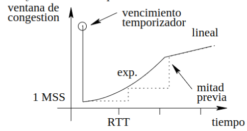
Recuperación Rápida en TCP
La recuperación rápida es un mecanismo dentro de TCP diseñado para mejorar la recuperación de la ventana de congestión después de una pérdida de paquetes.
A diferencia de un fin de temporización, que reinicia la ventana de congestión a 1 MSS, la recuperación rápida permite a TCP recuperarse sin reducir drásticamente su ventana, manteniendo la eficiencia de la conexión.
Cuando TCP recibe tres ACKs duplicados, interpreta esto como una señal de congestión leve (es decir, solo un paquete se ha perdido, pero la red no está completamente congestionada).
Reducción de la ventana de congestión:
- La ventana de congestión se reduce a la mitad del tamaño previo, más un margen de 3 MSS (tamaño máximo de segmento).
- La fórmula para calcular la nueva ventana de congestión es:
Retransmisión del paquete perdido: Durante esta fase, TCP retransmite el segmento perdido y continúa enviando nuevos segmentos dentro del límite de la ventana ajustada.
Incremento lineal (AIMD): Una vez que se ha resuelto la congestión, la ventana de congestión se incrementa de forma lineal (en unidades de 1 segmento por RTT) hasta alcanzar el ancho de banda disponible sin causar sobrecarga en la red.
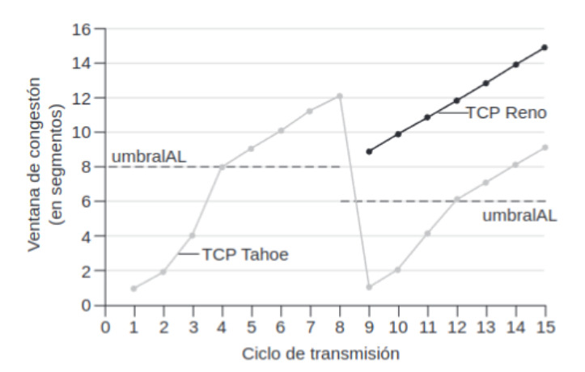
[! Info] En TCP distinguimos dos tipos de TCP:
- Reno: si recibimos 3 ACKs duplicados reduce la ventana a la mitad de su valor actual y comienza la fase de recuperación rápida.
- Tahoe: al recibir 3 ACKs duplicados reduce la ventana a 1 MSS y vuelve a la fase de inicio lento. Reno es más eficiente. Si se produce timeout (expira el contador) ambos vuelven a la fase de inicio lento.
3.4.4 Imparcialidad
Cuando varias conexiones TCP comparten un enlace, ajustan su tasa de envío automáticamente para repartir la capacidad disponible del enlace de manera equitativa. Por ejemplo, si dos conexiones TCP comparten un enlace de 10 Mbps, cada una recibirá aproximadamente 5 Mbps.
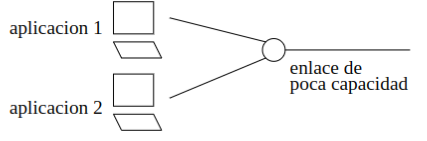
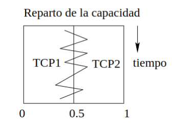
Sin embargo, cuando se introduce una conexión UDP junto con TCP, la conexión UDP, al no tener control de congestión, puede acaparar la mayor parte del ancho de banda. Del mismo modo, si se establece una conexión TCP junto con nueve conexiones TCP paralelas, el enlace se repartirá en una proporción de 1/10 para la primera conexión y 9/10 para las demás.